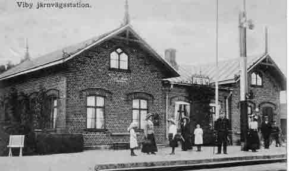
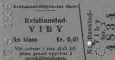

Jag har fått i uppdrag att samla ihop minnen från
gamla tiden om järnvägen i Viby. För egen del har jag ingen personlig
kännedom om när Viby station var i drift, jag är varken född eller
uppvuxen i Viby. Ingrid och jag byggde hus på ”Åge Jens” 1964 och då var
persontrafiken nedlagd sedan 1 nov. 1962 och stationen avbemannad.
Det jag kommer att framföra här är hämtat från bland annat Museiföreningen ÖSJ,
från CHJ jubileums-skrift i samband med förstatligandet 1944, från egna
gamla matriklar, från lånade äldre tidtabeller och i någon mån från min
46-åriga järnvägstjänst. Sen hoppas jag att det finns några personer i
Viby som kan komplettera med egna kända uppgifter och händelser i samband
med järnvägstrafiken i Viby.
Jag skall först i korta drag beröra de händelser som föregick byggandet av
Åhus-banan och sen försöka redogöra för järnvägstrafiken i Viby och inom
Gustav Adolfs socken och visa en del over-head bilder.
Sjöfarten med mera på Helgeå
Som bekant fick Åhus lämna sina stadsprivilegier till Kristianstad när den
anlades i början på 1600-talet. Den nya staden hade dock intresse av Åhus
som uthamn och tyngre transporter kom i stor utsträckning att
transporteras på vattenvägen via Hammarsjön och Helgeå under flera sekel
och blev en betydande kommunikationsled. Sjöfarten på leden fortsatte i
mera regelmässig form ända till 1911, och upphävdes som underhållspliktig
farled 1917.
Det inträffade dock händelser som efterhand gjorde sjöfarten besvärligare,
t ex Helgeåns nya utlopp vid Yngsjö grop, vilket sänkte vattenståndet
betydande, men med muddringar kunde i alla fall sjöfarten bibehållas.
Många båtar trafikerade farleden under årens lopp och flera av dem byggdes
av Ljunggrens Verkstad i Kristianstad, som grundades 1861.Bland annat
tillverkades lastångaren Helge, Christianstad, Sirius och Delfin, de
sistnämnda användes för nöjesresorna till Ekenabben.
Stadens handelsmän bildade Christianstads Pråmbolag, som även ombesörjde
lokala transporter, vilket även framgår av Sven-Arnes utdrag av
tidningsartiklar om tegeltransporter från Kvarnnäs.Ljunggrens Verkstad
tillverkade ett hundratal ångbåtar och tretusen järnvägs- och
spårvagnsfordon under årens lopp till 1925.
Järnvägsbygget Kristianstad – Åhus
Redan 1865 då Kristianstads första järnväg, CHJ öppnades mellan Hässleholm
och Kristianstad, fanns det tankar på en förlängning av banan till Åhus,
men handelsmännen, genom sina starka intressen i Pråmbolaget, avsåg att
båt- och pråmtrafiken var tillräcklig för kartan transportbehovet och
anskaffade så sent som 1865 ångslupen Kronan och 1876 lastångaren Helge.
Sjöfarten kunde dock i längden inte hävda sig mot järnvägen som alternativ
till båttrafiken. Det var dåligt vattendjup på sommaren och isbesvär på
vintern. Det kunde ju ta en hel vecka att staka sig till Åhus framgår det
av Sven-Arnes tidningsutdrag, varför det blev mer och mer aktuellt med ett
järnvägsbygge. En avgörande händelse som påskyndade järnvägsbygget
Kristianstad-Åhus inträffade 1883. Då öppnade Gärds Härads järnväg (GHJ/GJ)
sin linje Everöd-Åhus och därmed anslutning till linjen
Everöd-Tollarp-Karpalund-Kristianstad. Då fick Åhus järnvägsförbindelse
med Kristianstad, även om det var en omväg via Everöd-Tollarp-Karpalund.
Det blev en helt annan kapacitet och regularitet än vattenvägen till Åhus,
även om båttrafiken fortsatte en del år framåt. Detta drag kunde staden
endast möta genom att bygga en direkt järnvägsförbindelse till Åhus.
Den 21 juni 1884 hölls ett sammanträde i Kristianstad med ett hundratal
intresserade för ett järnvägsbygge. Ett sådant bygge hade
kostnadsberäknats till ca 350.000 kr. Lantbrukare Nils Persson i Kvarnäs
upplyste om att Gustav Adolfs socken kunde bidraga med 15.000 kr och
riksdagsman Anders Nilsson i Rinkaby med 12.000 kr från sin hemsocken. Det
bildades en interimsstyrelse med bland andra Nils Persson om ledamot.
Senare bildades en ordinarie styrelse för Christianstad-Åhus Jernvägs AB,
i denna ingick lantbrukare C Thuresson, Viby. Järnvägsbygget påbörjades
1885 i samråd med CHJ. Kostnaden blev 427.310 kr + 10.000 kr för jord från
staden. CHJ åtog sig att trafikera banan med sin materiel. CHJ övertog f ö
CÅJ 1906.
Järnvägen lades på Engelska banken, som uppkom då Nosabysjön torrlades.
Järnvägen öppnades för allmän trafik 19 maj 1886.
Järnvägen genom Viby
Järnvägen kom in i Gustav Adolfs socken ungefär vid lergravarna. Där
anläggs 1885 Håslövs lastplats med ett sidospår till Kvarnäs tegelbruk.
Spåret tangerade Kvarnäs gård. Enligt Eric Isendahl avkortades spåret i
början av 1940-talet, men användes dock för bettransporter och
grönsakslastning därefter. Spåret revs troligen upp på 1950-talet. Vid
Håslövs lastplats anlades också ett spår till CHJ grusgrop, det vi i dag
kallar Mårtens håla. Där lastades grus, troligen för CÅJ:s eget bruk men
kanske även för försäljning till andra. Spårdragningen är oviss, troligen
där Oscarssons växthus finns i dag. När spåret revs vet ingen. 1937
ändrades namnet Håslövs lastplats till Kvarnnäs lastplats.


Viby järnvägsstation 1931
40 öre för enkel resa till stan 1936
Viby station
6 km från Kristianstad anläggs Viby
hållplats. Varför stationen benämnes hållplats på bangårdsplanen är okänt,
även Hammar, Rinkaby och Horna benämndes så. Stationen byggdes med ett
mötesspår, stationshus, godsmagasin och lastkaj. Senare byggdes ett 3:e
spår, använt för betlastning bland annat. och även ett spår till
Likkistfabriken. Om stationshuset byggdes efter en annan ritning
(byggnadsritning) eller byggdes om i slutet på 1800-talet är ovisst, det
fick i alla fall det utseende som fotot visar. Stationen utrustades med en
semafor i trä. Semaforen användes för att ge signal till lokföraren om han
fick föra in tåget på stationen eller stanna utanför beroende på vilken
signal som visades. Vid mörker tändes en råoljelampa, som hissades upp i
masten bakom röda och gröna glas, som var förbundna med vingarna.
Träsemaforerna utbyttes efterhand mot järnkonstruktioner med elljus i
vingarna, när elljuset infördes. I modernare tider anordnades semaforer i
båda bangårdsändarna, det var svårt för föraren att se signalerna när
semaforen stod inne på stationen. Numera användes starka ljussignaler både
som dag- och nattsignaler.
Tågtätheten var inte stor i slutet på 1800-talet. Enligt Sydsvenska
Kommunikationstabellen sommaren 1898 gick 3 tåg i vardera riktningen.
Några tåg medförde postkupé, en avdelning i en vagn där postens personal,
en postiljon, sorterade post under tågets gång och utväxlade post vid
stationerna.
Biljettpriset mellan Viby och Kristianstad i 3:e klass var 25 öre för
enkel resa och 40 öre för returbiljett år 1898.Efterhand insattes fler
tåg, bland annat de omtalade badtågen till Åhus, vilket framgår av
tidtågtidtabellen sommaren 1914.
Personal vid Viby station
Enligt en gammal matrikel var Johan Håkansson, född den 8 dec. 1856,
stationsföreståndare åren 1886-1923. Han hade underofficersexamen. Om han
var föreståndare redan när järnvägen öppnades 1886 är oklart, då det av en
ännu äldre matrikel sägs att en banvakt var föreståndare i Viby och även
på andra platser. Kanske började han som banvakt. Under åren 1923-1928 var
Anton Liljeqvist, född den 9 juni i Jämshögs församling, föreståndare i
Viby. 1928 blev han stationsmästare i Önnestad. Vem som därefter blev
föreståndare i Viby är inte nämnt i en senare matrikel. Möjligen blev
stationen nedklassad, endast stationer med stationsmästare är i regel
upptagna i matriklarna.
Det är dock bekant att Edvard Karlsson tjänstgjorde i Viby i flera år. Han
lär ha varit gift med Lisa från orten. Från omkring 1947-1948 var Alfred
Ekberg föreståndare i Viby. Han kom då från Ekestad, jag vet mycket väl
vem han var. Han pensionerades troligen i Viby, och omkring 1960 var hans
fru Signe platsvakt i Viby.
Viby vik och Herkules
1927 anordnades en hållplats, Viby vik, mellan Viby och Herkules. Var den
var är oklart, möjligen nedanför Roskvists och Paulssons, det måste ha
varit där någon väg finns till järnvägen. Hållplatsen indrogs efterhand.
När?
År 1899 anläggs en lastplats vid Herkules tegelbruk för lastning och
lossning av bland annat tegel och andra varor. År 1901 bygger Herkules Tegelbruk
en Decauville-bana (600 mm spårvidd) på en viadukt över Åhusbanan för
transport från lertagen. Bruket revs 1976. Sidospåret låg kvar till
1980-talet, det var tänkt att Bröd. Pettersson skulle lasta skrot på
spåret, men de flyttade till Karpalund. Cykelbanan till Åhus går nu längs
järnvägsspåret.
Järnvägen genom Gustav Adolfs socken fortsätter bortom Herkules in i
Rinkaby socken.
Åhusbanan förstatligades 1944 samtidigt med övriga CHJ-banor. Därefter
ändrades stationsnamnet till Skånes Viby. Från och med 1962 är Åhusbanan
endast öppen för godstrafik.
Posten i Viby
Poststationen i Viby inrättades samtidigt som järnvägen öppnades 1886.
Föreståndaren för järnvägsstationen var även poststationsföreståndare.
Viby var en så kallat förenad järnvägs- och poststation, vilket var fallet
på de flesta landsortsstationer i landet. Föreståndaren var anställd och
avlönad av järnvägsbolaget eller SJ och ersättning för tjänsten reglerades
genom Postverket och järnvägsbolaget.
Posten på Viby station var kvar tills stationen lades ner 1962. Viby
återfick dock poststation i januari 1975 i Nils Svenssons nedlagda affär (
den började i förenklad form i Favörhallen) och flyttades åter till
Favörhallen i augusti 1991. Den lades dock ner i januari 1992 i samband
med att Favörhallen upphörde. Ingrid Persson var föreståndare för posten
1975-1991.
Den nya tiden hade inträtt och någon allmän service finns ej längre i
Viby.